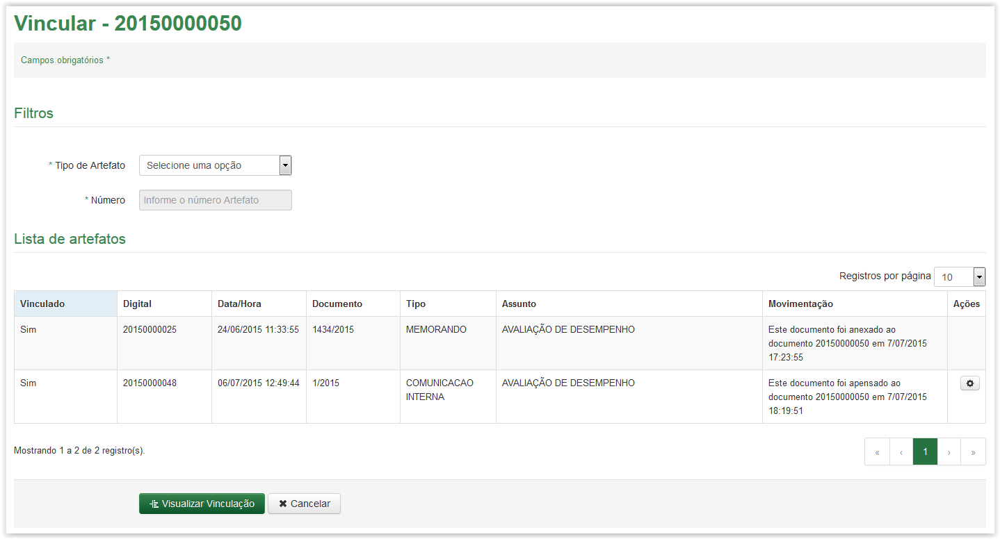
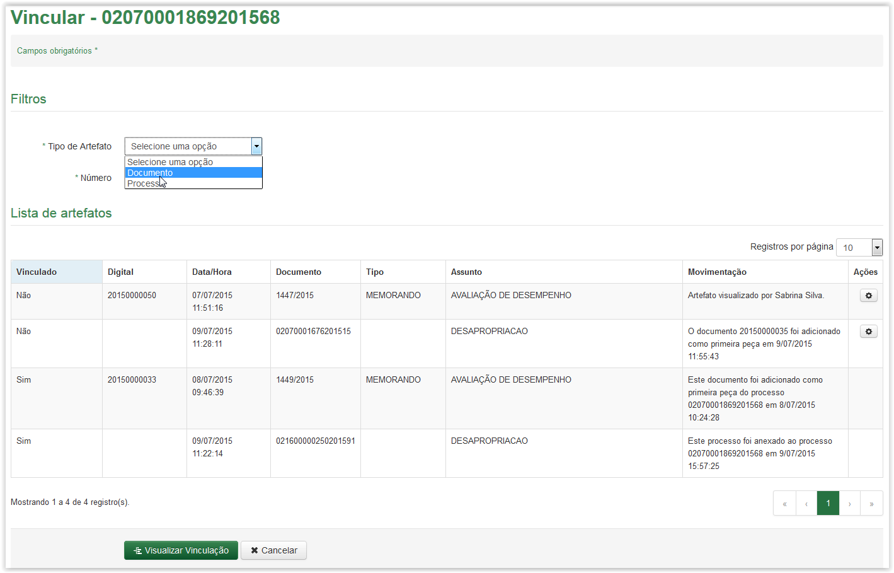
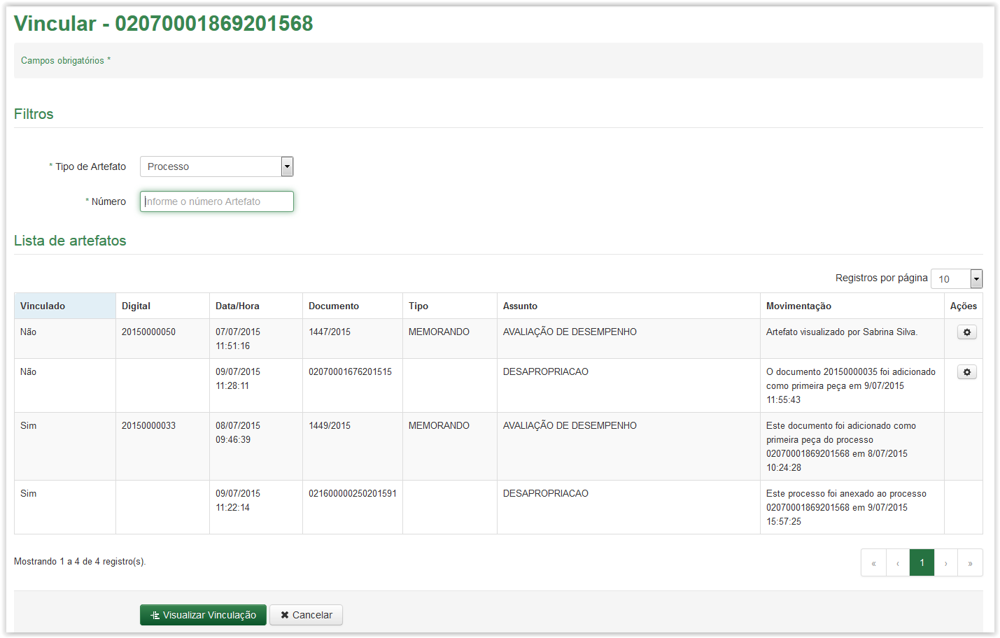
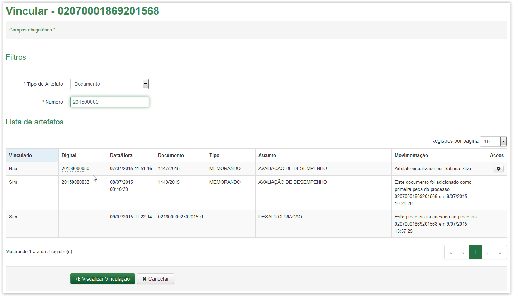
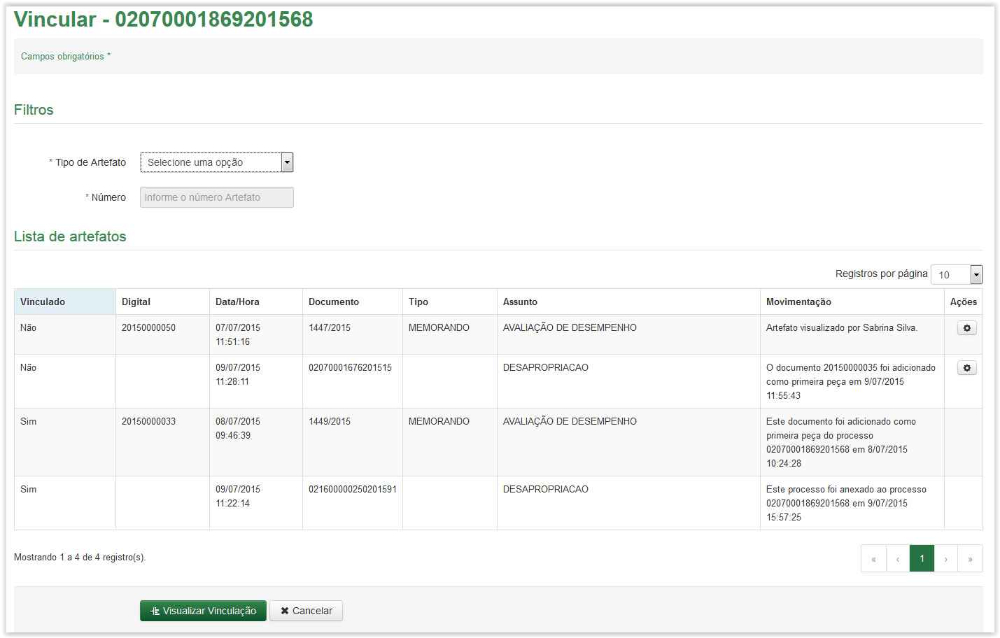
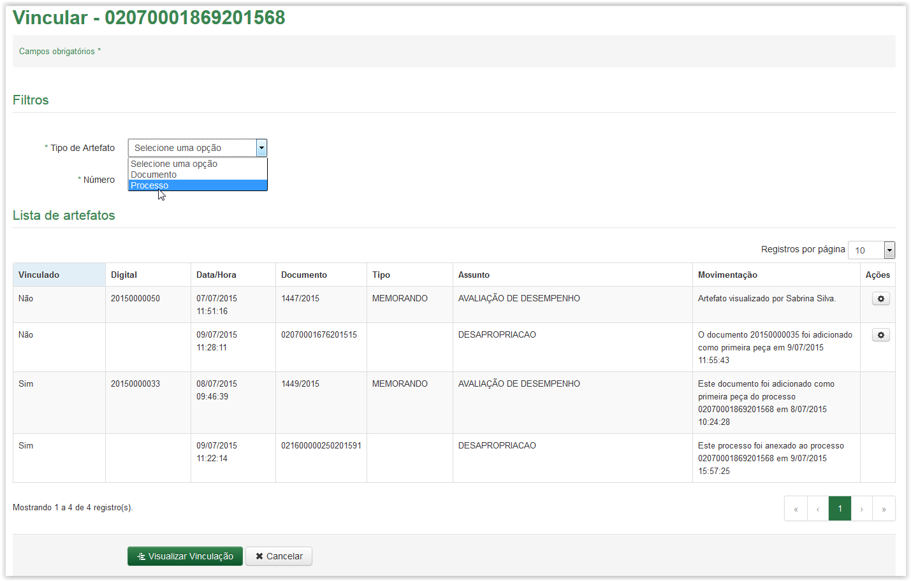
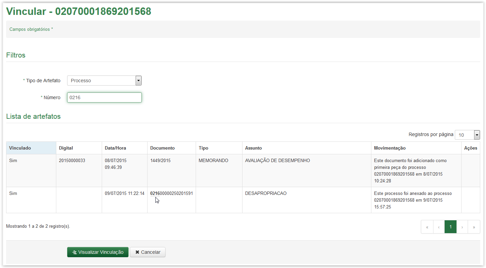

Vincular artefato
Após selecionar a opção Vincular, por meio do ícone  (Veja o link Vincular Artefato), na aba Documentos ou na aba Processos, o sistema apresenta a tela Vincular:
(Veja o link Vincular Artefato), na aba Documentos ou na aba Processos, o sistema apresenta a tela Vincular:

Tela Vincular
Informações para realizar pesquisa na tela Vincular:
Tipo de Artefato: |
O tipo de artefato pode ser um documento ou processo |
Número: |
Número do documento ou do processo |
 Preenchendo o filtro de pesquisa da tela Vincular!!
Preenchendo o filtro de pesquisa da tela Vincular!!

Selecionando o tipo Documento na lista do campo Tipo de Artefato

Tela Vincular - campo Número

Tela Vincular - realizando pesquisa de um documento utilizando o campo Número
Após selecionar a opção Vincular, por meio do ícone (Veja o link Vincular Artefato), na aba Processos, o sistema apresenta a tela Vincular:

Tela Vincular
Informações para realizar pesquisa na tela Vincular:
Tipo de Artefato: |
O tipo de artefato pode ser um documento ou processo |
Número: |
Número do documento ou do processo |
 Preenchendo o filtro de pesquisa da tela Vincular!!
Preenchendo o filtro de pesquisa da tela Vincular!!

Selecionando o tipo Processo na lista do campo Tipo de Artefato
Tela Vincular - campo Número

Tela Vincular - realizando pesquisa de um processo utilizando o campo Número
Created with the Personal Edition of HelpNDoc: Free help authoring tool